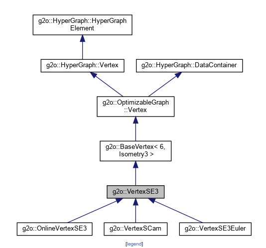
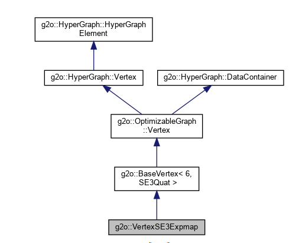
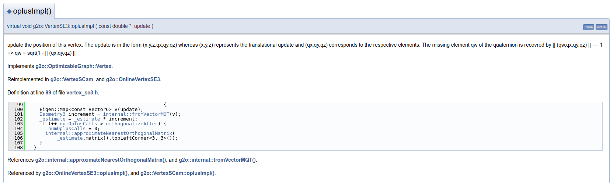
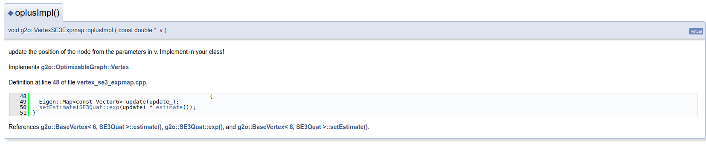
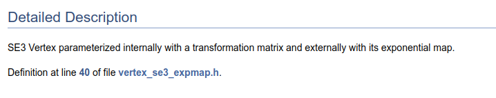

G2O - VertexSE3和VertexSE3Expmap的区别
相同点
- 两者都是表示位姿的顶点（Vertex）。两者都是
g2o::BaseVertex<Dimension,EstimationT>的子类


- 由于两者的
Dimension都是6，所以两者都是6自由度的顶点。于是在oplusImpl(const double* update)中，两者都会接收一个6维的增量，然后更新自身的估计值。
区别
区别1
VertexSE3内部使用Eigen::Isometry3来表示位姿，而VertexSE3Expmap内部使用g2o::SE3Quat来表示位姿。
区别2
上述区别导致了两者在进行增量更新的不同。VertexSE3需要将增量(double* update)先转换成Isometry3（这里使用的是将update中的后三个元素当作四元数的qx,qy,qz,然后根据单位四元数求出qx），然后直接进行位姿的叠加。而VertexSE3Expmap则需要将增量转换成SE3Quat，这里实际上用的是map将李代数转换到李群，然后再进行位姿的叠加。
VertexSE3进行增量更新的过程如下：

VertexSE3Expmap进行增量更新的过程如下：

注意
在g2o的文档注释中，对于VertexSE3Expmap的描述说的是内部使用转换矩阵表示，外部使用其对应的李代数表示。但是在代码中，VertexSE3Expmap的内部使用的是SE3Quat，其实也不是变换矩阵。
